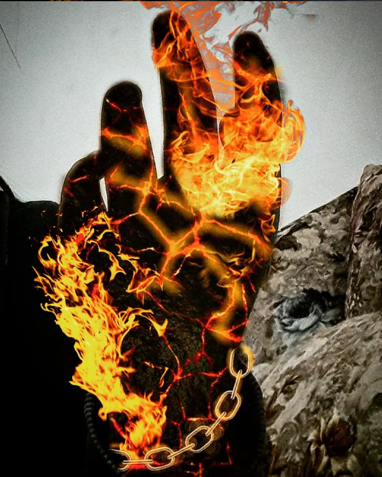
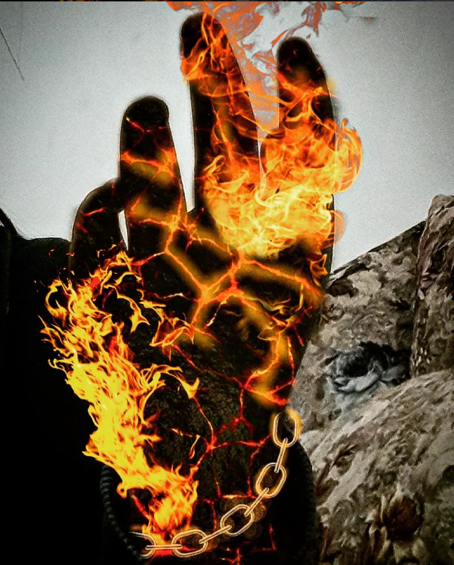
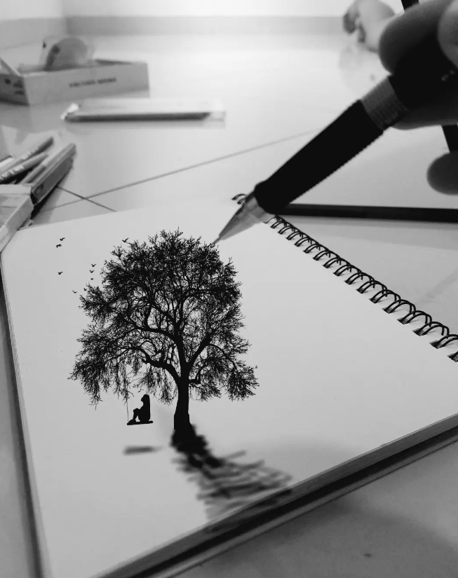
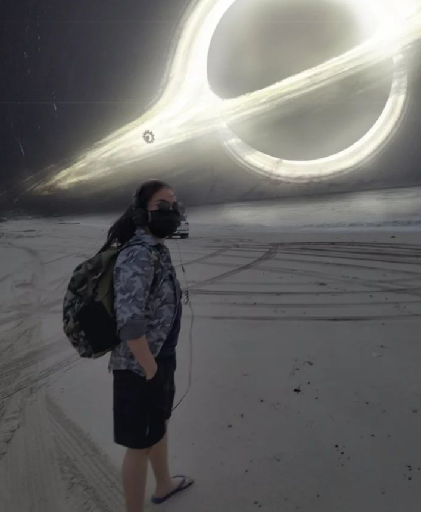
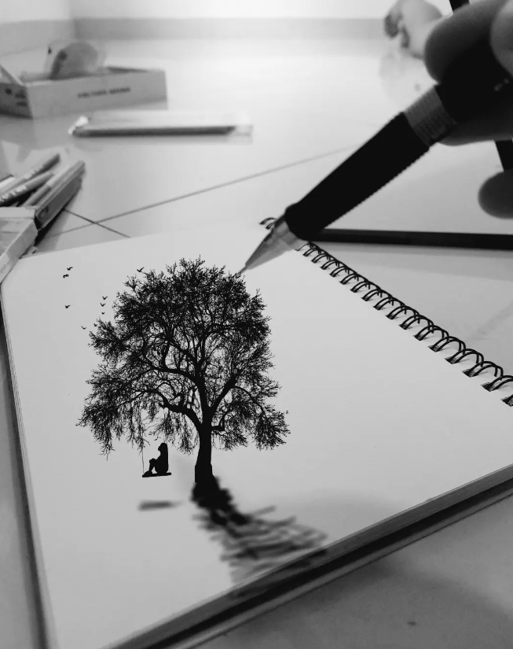
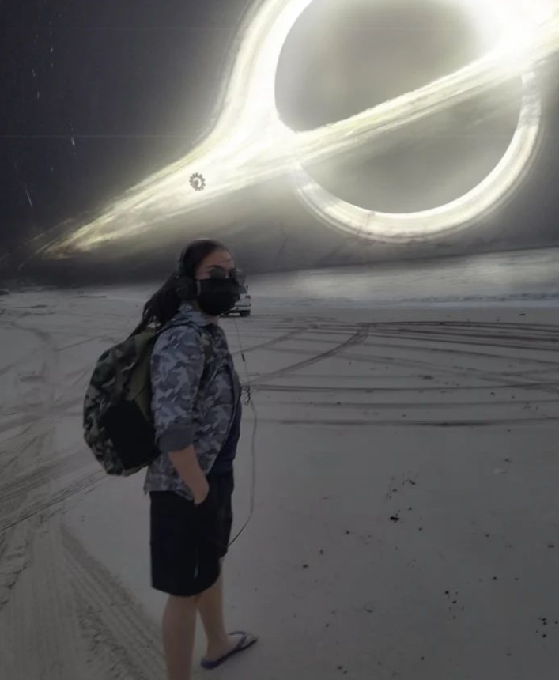

Skills
Other skills than sketching as a skill, usually I also make a photo editing with art. I used to take pictures on random places even at home. I customize them with inspirations and other things. And also gets inspiration from a social media platform called pinterest.
 



 





here are the edited photos with digital art basis that is used in photoshop. These photos was edited in pics art. Which is basically from a mobile.
The first picture is just myself getting edited. The title of that edited image is snowblind. Which is inspired by the mortal kombat series. The second image is just an image of my hand namely the magma fist. The third images explains my injury, and it's basically inspired from the attack on titan series because things may go different when I looked at myself getting injured, I had an idea of making this artwork of myself turning into a titan. The fourth picture explains my previous dream, it is not actually a painting, but it's just inserting other images to make it like a realistic like it's from a film or a game that I've been through. The fifth image is just myself with a different eye color. The name of the image is called the ocean eyes which is actually my old userame eversince as a youth. The fourth picture explains the imaginable dark sketch. It's just an inky sketch of a girl on a swing. It's not in the actual sketch, but it is just an imagination after I am drew a tree. The fourth images is just me at the beach as i can imagine myself in the interstellar movie with inspiration. The eighth picture is captured when I am on the band performance. And his guitar pick was inspired from Genshin Impact as the guitar pick inspires the constellation of Master Diluc in the game. The last image explains my greatest nightmare after I woke up from it. The whole night, I was dreaming about fighting a titan, and right after I woke up, I looked at the wall, I imagined a titan was just there staring at my soul, and I immediately grabbed my phone, and start editing of myself battling against a titan. Since Attack on titan is one of my favorite show as a youth and until now.